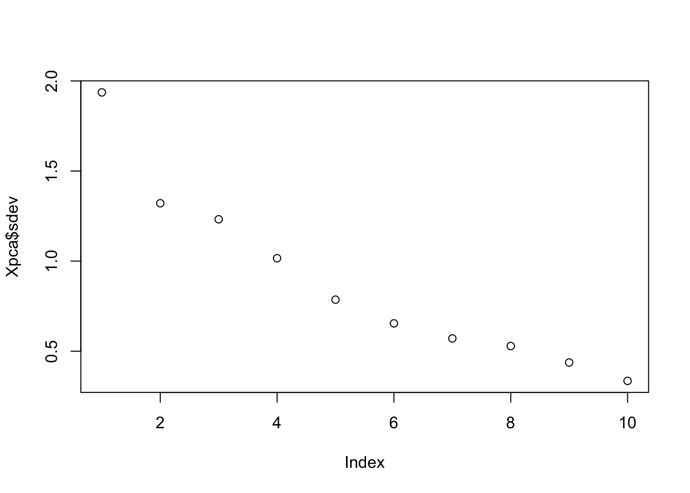

Chapter 30 Principle Component Analysis
Having seen SVD and Eigenvalue decomposition, we can now look at Principle Component Analysis (PCA), which is a statistical procedure that allows us to summarize the information content in large data files. In other words, PCA is a popular technique used to reduce the dimensionality of high-dimensional data while retaining most of the information in the original data.
PCA is a eigenvalue decomposition of a covariance matrix (of data matrix \(\mathbf{X}\)). Since a covariance matrix is a square symmetric matrix, we can apply the eigenvalue decomposition, which reveals the unique orthogonal directions (variances) in the data so that their orthogonal linear combinations maximize the total variance.
The goal is here a dimension reduction of the data matrix. Hence by selecting a few loading, we can reduce the dimension of the data but capture a substantial variation in the data at the same time.
Principal components are the ordered (orthogonal) lines (vectors) that best account for the maximum variance in the data by their magnitude. To get the (unique) variances (direction and the magnitude) in data, we first obtain the mean-centered covariance matrix.
When we use the covariance matrix of the data, we can use eigenvalue decomposition to identify the unique variation (eigenvectors) and their relative magnitudes (eigenvalues) in the data. Here is a simple procedure:
- \(\mathbf{X}\) is the data matrix,
- \(\mathbf{B}\) is the mean-centered data matrix,
- \(\mathbf{C}\) is the covariance matrix (\(\mathbf{B}^T\mathbf{B}\)). Note that, if \(\mathbf{B}\) is scaled, i.e. “z-scored”, \(\mathbf{B}^T\mathbf{B}\) gives correlation matrix. We will have more information on covariance and correlation in Chapter 32.
- The eigenvectors and values of \(\mathbf{C}\) by \(\mathbf{C} = \mathbf{VDV^{\top}}\). Thus, \(\mathbf{V}\) contains the eigenvectors (loadings) and \(\mathbf{D}\) contains eigenvalues.
- Using \(\mathbf{V}\), the transformation of \(\mathbf{B}\) with \(\mathbf{B} \mathbf{V}\) maps the data of \(p\) variables to a new space of \(p\) variables which are uncorrelated over the dataset. \(\mathbf{T} =\mathbf{B} \mathbf{V}\) is called the principle component or score matrix.
- Since SVD of \(\mathbf{B} = \mathbf{U} \Sigma \mathbf{V}^{\top}\), we can also get \(\mathbf{B}\mathbf{V} = \mathbf{T} = \mathbf{U\Sigma}\). Hence the principle components are \(\mathbf{T} = \mathbf{BV} = \mathbf{U\Sigma}\).
- However, not all the principal components need to be kept. Keeping only the first \(r\) principal components, produced by using only the first \(r\) eigenvectors, gives the truncated transformation \(\mathbf{T}_{r} = \mathbf{B} \mathbf{V}_{r}\). Obviously you choose those with higher variance in each directions by the order of eigenvalues.
- We can use \(\frac{\lambda_{k}}{\sum_{i=1} \lambda_{k}}\) to identify \(r\). Or cumulatively, we can see how much variation could be captured by \(r\) number of \(\lambda\)s, which gives us an idea how many principle components to keep:
\[ \frac{\sum_{i=1}^{r} \lambda_{k}}{\sum_{i=1}^n \lambda_{k}} \]
We use the factorextra package and the decathlon2 data for an example.
library("factoextra")
data(decathlon2)
X <- as.matrix(decathlon2[, 1:10])
head(X)## X100m Long.jump Shot.put High.jump X400m X110m.hurdle Discus
## SEBRLE 11.04 7.58 14.83 2.07 49.81 14.69 43.75
## CLAY 10.76 7.40 14.26 1.86 49.37 14.05 50.72
## BERNARD 11.02 7.23 14.25 1.92 48.93 14.99 40.87
## YURKOV 11.34 7.09 15.19 2.10 50.42 15.31 46.26
## ZSIVOCZKY 11.13 7.30 13.48 2.01 48.62 14.17 45.67
## McMULLEN 10.83 7.31 13.76 2.13 49.91 14.38 44.41
## Pole.vault Javeline X1500m
## SEBRLE 5.02 63.19 291.7
## CLAY 4.92 60.15 301.5
## BERNARD 5.32 62.77 280.1
## YURKOV 4.72 63.44 276.4
## ZSIVOCZKY 4.42 55.37 268.0
## McMULLEN 4.42 56.37 285.1n <- nrow(X)
B <- scale(X, center = TRUE)
C <- t(B) %*% B / (n - 1)
head(C)## X100m Long.jump Shot.put High.jump X400m
## X100m 1.0000000 -0.7377932 -0.3703180 -0.3146495 0.5703453
## Long.jump -0.7377932 1.0000000 0.3737847 0.2682078 -0.5036687
## Shot.put -0.3703180 0.3737847 1.0000000 0.5747998 -0.2073588
## High.jump -0.3146495 0.2682078 0.5747998 1.0000000 -0.2616603
## X400m 0.5703453 -0.5036687 -0.2073588 -0.2616603 1.0000000
## X110m.hurdle 0.6699790 -0.5521158 -0.2701634 -0.2022579 0.5970140
## X110m.hurdle Discus Pole.vault Javeline X1500m
## X100m 0.6699790 -0.3893760 0.01156433 -0.26635476 -0.17805307
## Long.jump -0.5521158 0.3287652 0.07982045 0.28806781 0.17332597
## Shot.put -0.2701634 0.7225179 -0.06837068 0.47558572 0.00959628
## High.jump -0.2022579 0.4210187 -0.55129583 0.21051789 -0.15699017
## X400m 0.5970140 -0.2545326 0.11156898 0.02350554 0.18346035
## X110m.hurdle 1.0000000 -0.4213608 0.12118697 0.09655757 -0.10331329#Check it
head(cov(B))## X100m Long.jump Shot.put High.jump X400m
## X100m 1.0000000 -0.7377932 -0.3703180 -0.3146495 0.5703453
## Long.jump -0.7377932 1.0000000 0.3737847 0.2682078 -0.5036687
## Shot.put -0.3703180 0.3737847 1.0000000 0.5747998 -0.2073588
## High.jump -0.3146495 0.2682078 0.5747998 1.0000000 -0.2616603
## X400m 0.5703453 -0.5036687 -0.2073588 -0.2616603 1.0000000
## X110m.hurdle 0.6699790 -0.5521158 -0.2701634 -0.2022579 0.5970140
## X110m.hurdle Discus Pole.vault Javeline X1500m
## X100m 0.6699790 -0.3893760 0.01156433 -0.26635476 -0.17805307
## Long.jump -0.5521158 0.3287652 0.07982045 0.28806781 0.17332597
## Shot.put -0.2701634 0.7225179 -0.06837068 0.47558572 0.00959628
## High.jump -0.2022579 0.4210187 -0.55129583 0.21051789 -0.15699017
## X400m 0.5970140 -0.2545326 0.11156898 0.02350554 0.18346035
## X110m.hurdle 1.0000000 -0.4213608 0.12118697 0.09655757 -0.10331329Eigenvalues and vectors …
#Eigens
evalues <- eigen(C)$values
evalues## [1] 3.7499727 1.7451681 1.5178280 1.0322001 0.6178387 0.4282908 0.3259103
## [8] 0.2793827 0.1911128 0.1122959evectors <- eigen(C)$vectors
evectors #Ordered## [,1] [,2] [,3] [,4] [,5] [,6]
## [1,] 0.42290657 -0.2594748 -0.081870461 -0.09974877 0.2796419 -0.16023494
## [2,] -0.39189495 0.2887806 0.005082180 0.18250903 -0.3355025 -0.07384658
## [3,] -0.36926619 -0.2135552 -0.384621732 -0.03553644 0.3544877 -0.32207320
## [4,] -0.31422571 -0.4627797 -0.003738604 -0.07012348 -0.3824125 -0.52738027
## [5,] 0.33248297 -0.1123521 -0.418635317 -0.26554389 -0.2534755 0.23884715
## [6,] 0.36995919 -0.2252392 -0.338027983 0.15726889 -0.2048540 -0.26249611
## [7,] -0.37020078 -0.1547241 -0.219417086 -0.39137188 0.4319091 0.28217086
## [8,] 0.11433982 0.5583051 -0.327177839 0.24759476 0.3340758 -0.43606610
## [9,] -0.18341259 -0.0745854 -0.564474643 0.47792535 -0.1697426 0.42368592
## [10,] -0.03599937 0.4300522 -0.286328973 -0.64220377 -0.3227349 -0.10850981
## [,7] [,8] [,9] [,10]
## [1,] 0.03227949 -0.35266427 0.71190625 -0.03272397
## [2,] -0.24902853 -0.72986071 0.12801382 -0.02395904
## [3,] -0.23059438 0.01767069 -0.07184807 0.61708920
## [4,] -0.03992994 0.25003572 0.14583529 -0.41523052
## [5,] -0.69014364 0.01543618 -0.13706918 -0.12016951
## [6,] 0.42797378 -0.36415520 -0.49550598 0.03514180
## [7,] 0.18416631 -0.26865454 -0.18621144 -0.48037792
## [8,] -0.12654370 0.16086549 -0.02983660 -0.40290423
## [9,] 0.23324548 0.19922452 0.33300936 -0.02100398
## [10,] 0.34406521 0.09752169 0.19899138 0.18954698Now with prcomp(). First, eigenvalues:
# With `prcomp()`
Xpca <- prcomp(X, scale = TRUE)
#Eigenvalues
Xpca$sdev ## [1] 1.9364846 1.3210481 1.2320016 1.0159725 0.7860272 0.6544393 0.5708855
## [8] 0.5285666 0.4371645 0.3351059They are the square root of the eigenvalues that we calculated before and they are ordered.#
sqrt(evalues)And, the “loadings” (Eigenvectors):
#Eigenvectors
Xpca$rotation # 10x10## PC1 PC2 PC3 PC4 PC5
## X100m -0.42290657 0.2594748 -0.081870461 0.09974877 -0.2796419
## Long.jump 0.39189495 -0.2887806 0.005082180 -0.18250903 0.3355025
## Shot.put 0.36926619 0.2135552 -0.384621732 0.03553644 -0.3544877
## High.jump 0.31422571 0.4627797 -0.003738604 0.07012348 0.3824125
## X400m -0.33248297 0.1123521 -0.418635317 0.26554389 0.2534755
## X110m.hurdle -0.36995919 0.2252392 -0.338027983 -0.15726889 0.2048540
## Discus 0.37020078 0.1547241 -0.219417086 0.39137188 -0.4319091
## Pole.vault -0.11433982 -0.5583051 -0.327177839 -0.24759476 -0.3340758
## Javeline 0.18341259 0.0745854 -0.564474643 -0.47792535 0.1697426
## X1500m 0.03599937 -0.4300522 -0.286328973 0.64220377 0.3227349
## PC6 PC7 PC8 PC9 PC10
## X100m 0.16023494 -0.03227949 0.35266427 -0.71190625 0.03272397
## Long.jump 0.07384658 0.24902853 0.72986071 -0.12801382 0.02395904
## Shot.put 0.32207320 0.23059438 -0.01767069 0.07184807 -0.61708920
## High.jump 0.52738027 0.03992994 -0.25003572 -0.14583529 0.41523052
## X400m -0.23884715 0.69014364 -0.01543618 0.13706918 0.12016951
## X110m.hurdle 0.26249611 -0.42797378 0.36415520 0.49550598 -0.03514180
## Discus -0.28217086 -0.18416631 0.26865454 0.18621144 0.48037792
## Pole.vault 0.43606610 0.12654370 -0.16086549 0.02983660 0.40290423
## Javeline -0.42368592 -0.23324548 -0.19922452 -0.33300936 0.02100398
## X1500m 0.10850981 -0.34406521 -0.09752169 -0.19899138 -0.18954698loadings <- Xpca$rotationThe signs of eigenvectors are flipped and opposites of what we calculated with eigen() above. This is because the definition of an eigenbasis is ambiguous of sign. There are multiple discussions about the sign reversals in eignevectores.
Let’s visualize the order:
plot(Xpca$sdev) # Eigenvalues
fviz_eig(Xpca) # Cumulative with "factoextra"
# Or
var <- (Xpca$sdev) ^ 2
var_perc <- var / sum(var) * 100
barplot(
var_perc,
xlab = 'PC',
ylab = 'Percent Variance',
names.arg = 1:length(var_perc),
las = 1,
ylim = c(0, max(var_perc)),
col = 'lightgreen'
)
abline(h = mean(var_perc), col = 'red')
Since we have ten variables, if each variable contributed equally, they would each contribute 10% to the total variance (red line). This criterion suggests we should also include principal component 4 (but barely) in our interpretation.
And principle component scores \(\mathbf{T} = \mathbf{X}\mathbf{V}\) (a.k.a score matrix) with prcomp():
pc <- scale(X) %*% Xpca$rotation
head(pc)## PC1 PC2 PC3 PC4 PC5 PC6
## SEBRLE 0.2727622 -0.5264068 -1.5556058 0.10384438 1.05453531 0.7177257
## CLAY 0.8879389 -2.0551314 -0.8249697 1.81612193 -0.40100595 -1.5039874
## BERNARD -1.3466138 -1.3229149 -0.9439501 -1.46516144 -0.17925232 0.5996203
## YURKOV -0.9108536 2.2390912 -1.9063730 0.09501304 0.18735823 0.3754439
## ZSIVOCZKY -0.1018764 1.0694498 2.0596722 0.07056229 -0.03232182 -0.9321431
## McMULLEN 0.2353742 0.9215376 0.8028425 1.17942532 1.79598700 -0.3241881
## PC7 PC8 PC9 PC10
## SEBRLE -0.04935537 0.02990462 -0.63079187 0.07728655
## CLAY -0.75968352 -0.06536612 0.05920672 0.15812336
## BERNARD -0.75032098 -0.49570997 0.07483747 -0.03288604
## YURKOV -0.29565551 0.09332310 -0.06769776 0.13791531
## ZSIVOCZKY -0.30752133 0.29476740 -0.48055837 0.44234659
## McMULLEN 0.02896393 -0.53358562 0.05116850 0.37610188dim(pc)## [1] 27 10# which is also given by `prcomp()`
head(Xpca$x)## PC1 PC2 PC3 PC4 PC5 PC6
## SEBRLE 0.2727622 -0.5264068 -1.5556058 0.10384438 1.05453531 0.7177257
## CLAY 0.8879389 -2.0551314 -0.8249697 1.81612193 -0.40100595 -1.5039874
## BERNARD -1.3466138 -1.3229149 -0.9439501 -1.46516144 -0.17925232 0.5996203
## YURKOV -0.9108536 2.2390912 -1.9063730 0.09501304 0.18735823 0.3754439
## ZSIVOCZKY -0.1018764 1.0694498 2.0596722 0.07056229 -0.03232182 -0.9321431
## McMULLEN 0.2353742 0.9215376 0.8028425 1.17942532 1.79598700 -0.3241881
## PC7 PC8 PC9 PC10
## SEBRLE -0.04935537 0.02990462 -0.63079187 0.07728655
## CLAY -0.75968352 -0.06536612 0.05920672 0.15812336
## BERNARD -0.75032098 -0.49570997 0.07483747 -0.03288604
## YURKOV -0.29565551 0.09332310 -0.06769776 0.13791531
## ZSIVOCZKY -0.30752133 0.29476740 -0.48055837 0.44234659
## McMULLEN 0.02896393 -0.53358562 0.05116850 0.37610188Now you can think that if we use evectors that we calculated earlier with filliped signs, the data would be different. It’s similar to multiply the entire data with -1. So the data would not change in a sense that that captures the variation between observations and variables. That’s why the sign of eigenvalues are arbitraray.
Now, with SVD:
# With SVD
Xsvd <- svd(scale(X))
pc_2 <- Xsvd$u %*% diag(Xsvd$d)
dim(pc_2)## [1] 27 10head(pc_2)## [,1] [,2] [,3] [,4] [,5] [,6]
## [1,] 0.2727622 -0.5264068 -1.5556058 0.10384438 1.05453531 0.7177257
## [2,] 0.8879389 -2.0551314 -0.8249697 1.81612193 -0.40100595 -1.5039874
## [3,] -1.3466138 -1.3229149 -0.9439501 -1.46516144 -0.17925232 0.5996203
## [4,] -0.9108536 2.2390912 -1.9063730 0.09501304 0.18735823 0.3754439
## [5,] -0.1018764 1.0694498 2.0596722 0.07056229 -0.03232182 -0.9321431
## [6,] 0.2353742 0.9215376 0.8028425 1.17942532 1.79598700 -0.3241881
## [,7] [,8] [,9] [,10]
## [1,] -0.04935537 0.02990462 -0.63079187 0.07728655
## [2,] -0.75968352 -0.06536612 0.05920672 0.15812336
## [3,] -0.75032098 -0.49570997 0.07483747 -0.03288604
## [4,] -0.29565551 0.09332310 -0.06769776 0.13791531
## [5,] -0.30752133 0.29476740 -0.48055837 0.44234659
## [6,] 0.02896393 -0.53358562 0.05116850 0.37610188Here we can reduce the dimensionality by selecting only 4 PC (the first 4 PC’s are above the average, which explain more than 80% of the variation in the data - see the graph above)
reduced <- pc[, 1:4]
dim(reduced)## [1] 27 4head(reduced)## PC1 PC2 PC3 PC4
## SEBRLE 0.2727622 -0.5264068 -1.5556058 0.10384438
## CLAY 0.8879389 -2.0551314 -0.8249697 1.81612193
## BERNARD -1.3466138 -1.3229149 -0.9439501 -1.46516144
## YURKOV -0.9108536 2.2390912 -1.9063730 0.09501304
## ZSIVOCZKY -0.1018764 1.0694498 2.0596722 0.07056229
## McMULLEN 0.2353742 0.9215376 0.8028425 1.17942532The individual columns of \(\mathbf{T}\) successively inherit the maximum possible variance from \(\mathbf{X}\), with each coefficient vector in \(\mathbf{V}\) constrained to be a unit vector. In \(\mathbf{T}=\mathbf{X V}\), \(\mathbf{V}\) is a \(p \times p\) matrix of weights whose columns are the eigenvectors of \(\mathbf{X}^{\top} \mathbf{X}\). The columns of \(\mathbf{V}\) multiplied by the square root of corresponding eigenvalues, that is, eigenvectors scaled up by the variances, are called loadings in PCA and Factor analysis.
Note that if we make a singular value decomposition for a covariance matrix
\[ \begin{aligned} \mathbf{X}^{T} \mathbf{X} &=\mathbf{V} \mathbf{\Sigma}^{\top} \mathbf{U}^{\top} \mathbf{U} \mathbf{\Sigma} \mathbf{V}^{\top} \\ &=\mathbf{V} \mathbf{\Sigma}^{\top} \mathbf{\Sigma} \mathbf{V}^{\top} \\ &=\mathbf{V} \hat{\mathbf{\Sigma}}^{2} \mathbf{V}^{\top} \end{aligned} \]
where \(\hat{\boldsymbol{\Sigma}}\) is the square diagonal matrix with the singular values of \(\mathbf{X}\) and the excess zeros are chopped off so that it satisfies \(\hat{\boldsymbol{\Sigma}}^{2}=\boldsymbol{\Sigma}^{\top} \boldsymbol{\Sigma}\).
Comparison with the eigenvector factorization of \(\mathbf{X}^{\top} \mathbf{X}\) establishes that the right singular vectors \(\mathbf{V}\) of \(\mathbf{X}\) are equivalent to the eigenvectors of \(\mathbf{X}^{\top} \mathbf{X}\), while the singular values \(\sigma_{(k)}\) of \(\mathbf{X}\) are equal to the square-root of the eigenvalues \(\lambda_{(k)}\) of \(\mathbf{X}^{\top} \mathbf{X}\).